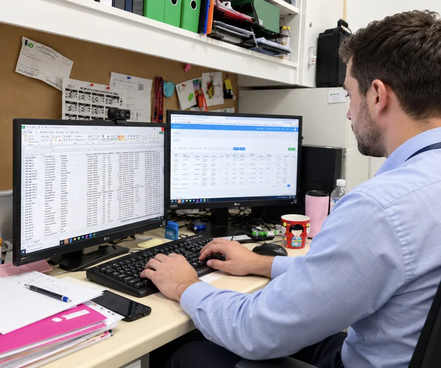
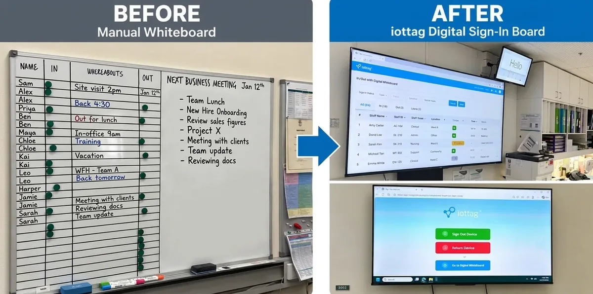
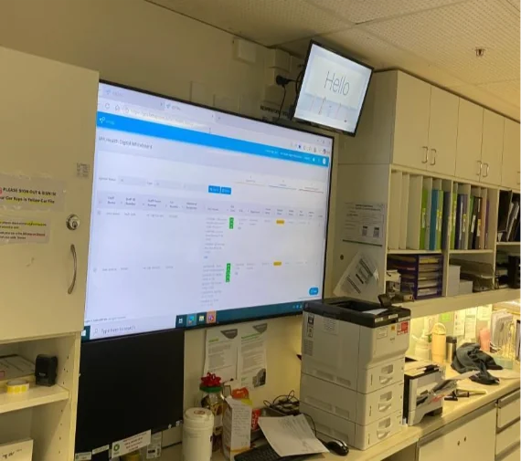

Real-time
system of record
Bring workforce activity and safety events into one shared record. Manage the information once and automate its delivery to the teams that need it.
Less chasing. Clearer accountability.Next generation staff safety systems
One live record that brings workforce visibility, A1 emergency response, system health checks and training together to keep the right teams informed.
WHS Specialist
Modular systems
Connect the people, processes and technology around your workforce. Every stage contributes to the same safety record.
Before work begins
Train staff to use the system and understand the response process. Check system health before field work starts — so readiness is part of the working day, not an afterthought.

Illustrative workflow
While people are working
Bring schedules, journeys, available location and worker status together. Supervisors see the working day, while A1 monitors staff and safety alerts through the connected system.
Worker status & alerts
Activity & exceptions
On-site · In transit · On visit
When help is needed
A1 call-centre monitoring connects the alert to your agreed escalation process. Available location and incident audio help inform the response, while supervisors receive updates.
Help needed
Monitoring
& escalation
Police / ambulance
Alerts & updates
Response configured around your organisation.
Across the entire operation
Track activity, alerts, response actions and outcomes in one live record. Automate relevant information to supervisors, WHS and response teams — instead of chasing updates across disconnected tools.
Illustrative event history — not a live worker record.
The iottag difference
Your operational record becomes the foundation for clearer decisions, coordinated teams and less manual administration.
Bring workforce activity and safety events into one shared record. Manage the information once and automate its delivery to the teams that need it.
Less chasing. Clearer accountability.Use events, exceptions and response history to inform risk reviews, support investigations and maintain clearer compliance records.
Better-informed safety decisions.Connect scheduling, workforce and operational information. Build around the systems your organisation already uses, with integrations scoped to your needs.
Connected operations. Less duplication.Real systems. Real installations.
Connect the people in the field with the people responsible for their safety — through shared site and supervisor views.

A site-based sign-out and return station connects worker activity with the wider system.

A shared operational view brings workforce information into the workplace.
A dedicated SOS alarm worn on a lanyard. Staff can request help quickly and discreetly if a home visit becomes uncomfortable or unsafe.
Home visits & community careCustomisable. Modular. Connected.
Choose the capabilities your operation needs. Configure workflows and information sharing around your teams, then add modules as requirements change.
Ready to learn more?
Talk us through your people, risks and existing systems. We will map an iottag configuration around the way your organisation works.
Which type of personal safety alarm do you require?
Book a system walkthrough